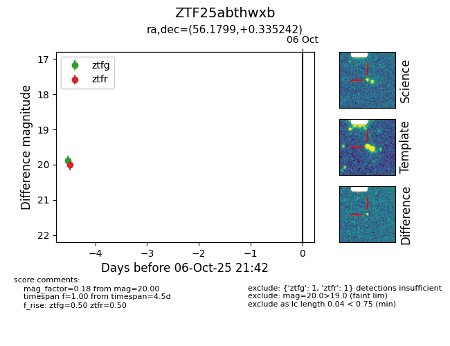

FINK: ZTF25abthwxb
Lasair: ZTF25abthwxb
ALeRCE: ZTF25abthwxb
ZTF25abthwxb (ztf,fink)
equatorial (ra, dec) = (56.1799,+0.33524)
galactic (l, b) = (186.7752,-40.15161)

last ztfg=19.88, ztfr=20.00
1 ztfg, 1 ztfr detections